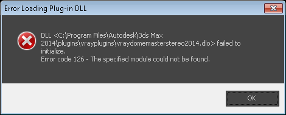
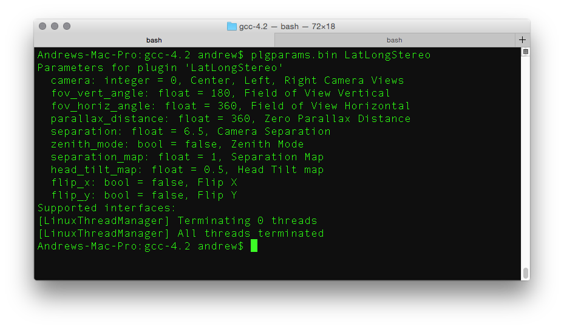
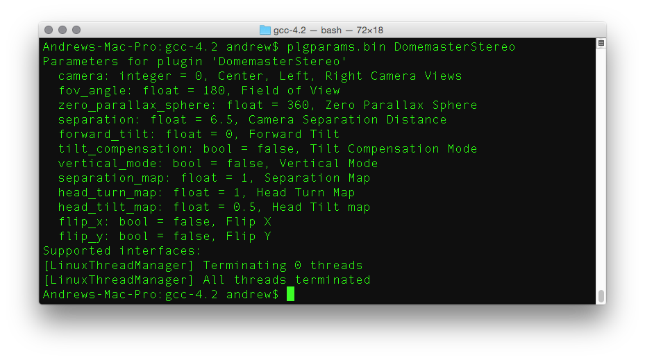
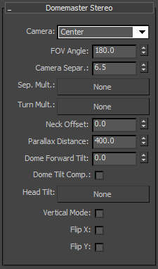
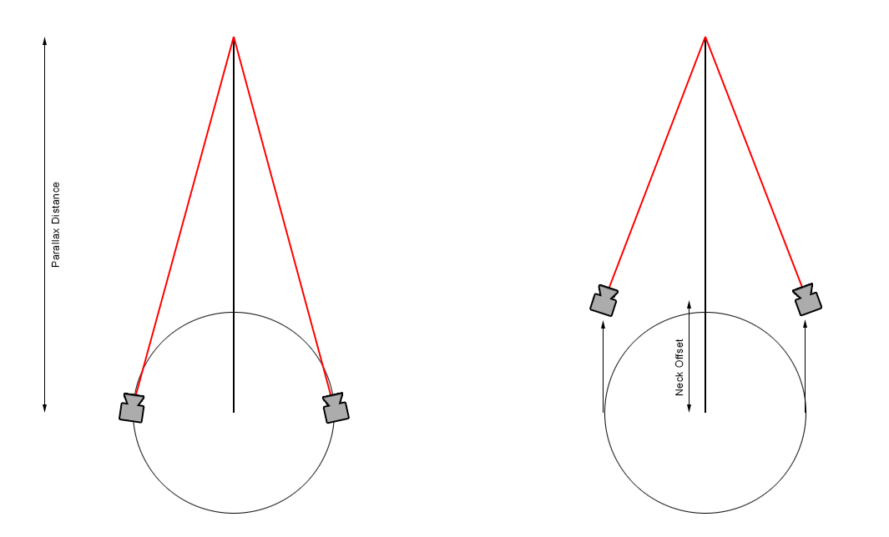
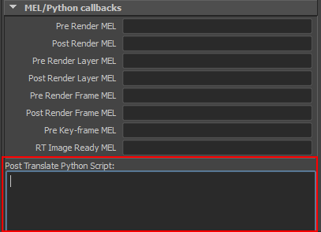

2015-03-28
The Domemaster Stereo Shader is a set of fulldome stereo and latlong stereo production lens shaders for 3DS Max, Maya, Softimage, Houdini, Maxwell Studio, Mental Ray Standalone, Vray Standalone, and Arnold Standalone. The lens shaders are available for Mental Ray, Vray, and Arnold, and comes integrated in Maxwell Render version 3.1+.
This guide covers the Vray version of the Domemaster Stereo Shader.
The current version of the Vray Domemaster3D shaders (as of 2015-03-23 ) is a development build.
The Vray Standalone version generally works without too many issues.
More work needs to be done to apply a black overlay to the circular outside area of the domemaster frame. Right now the DomemasterStereo shader will fill the outside circular area in the frame with a solid color based upon the current data at the 0/0/0 X/Y/Z ray angle. Also the shader doesn't apply a circular alpha channel overlay yet.
The Maya integration is still a work in progress. The Domemaster3D shaders are now active in the Maya render view and the custom Vray Extra Attributes are linked into the Vray for Maya .vrscene exporter when the lens shaders are added as Vray Extra Attributes on the camera shape node.
The first working version of the 3DS Max source code has been added and there are development shader builds for Vray 3.0 on 3DS Max 2015 and 3DS Max 2014, and Vray 2.5 for 3DS Max 2015, and Vray 2.4 for 3DS Max 2013.
Right now the DomemasterStereo and LatLongStereo shaders are accessible from Vray Standalone and Vray RT version 2.5 / 3.0 using the vray.exe command line program. Until the Maya and 3DS Max shader integrations are complete you will have to add the DomemasterStereo and LatLongStereo camera parameters to your .vrscene files manually.
Andrew Hazelden's Vray Syntax Highlighter module for Notepad++, GEDIT, BBEdit, and TextWrangler is a good tool for simplifying the process of editing a .vrscene file.
You can upgrade a regular Vray camera (in this case named RenderCamShape) to a DomemasterStereo camera by finding the camera entry in your Vray .vrscene file and pasting the following text in its place:
DomemasterStereo RenderCamShape {
camera=0;
fov_angle=360.0;
zero_parallax_sphere=355.0;
separation=6.5;
forward_tilt=0.0;
tilt_compensation=0;
vertical_mode=1;
separation_map=1.0;
head_turn_map=1.0;
head_tilt_map=0.5;
flip_x=0;
flip_y=0;
}
Note: camera=0 means center view, camera=1 is left view, and camera=2 is right view.
You can test this code out using the included vray example scene "vray 2 DomemasterStereo.vrscene". To render the sample scene launch vray standalone from the command prompt with:
vray.exe -sceneFile="vray 2 DomemasterStereo.vrscene"

You can upgrade a regular Vray camera (in this case named RenderCamShape) to a LatLongStereo camera by finding the camera entry in your Vray .vrscene file and pasting the following text in its place:
LatLongStereo RenderCamShape {
camera=0;
fov_vert_angle=180.0;
fov_horiz_angle=360.0;
parallax_distance=355.0;
separation=6.5;
zenith_mode=1;
separation_map=1;
}
Note: camera=0 means center view, camera=1 is left view, and camera=2 is right view.
You can test this code out using the included vray example scene "vray 2 LatLongStereo.vrscene". To render the sample scene launch vray standalone from the command prompt with:
vray.exe -sceneFile="vray 2 LatLongStereo.vrscene"
Step 1. Download the Visual Studio 2012 (VC++ 11.0) Redistributable Package.
Step 2. Copy the .dll files to the vray-plugins directory:
C:\Program Files\Chaos Group\V-Ray\Standalone for x64\bin\x64\vc101\plugins
Vray Plugin Files:
vray_DomemasterStereo.dll
vray_LatLongStereo.dll
Step 3. Edit the Windows environment variables and add an entry for the VRAY_PLUGINS_x64 Vray standalone plugins path location.

For Vray Standalone 2.5 the standard VRAY_PLUGINS_x64 setting would be:
VRAY_PLUGINS_x64
C:\Program Files\Chaos Group\V-Ray\Standalone for x64\bin\x64\vc101\plugins
There are now Vray 2.4 for 3DS Max 2013, Vray 2.5 for 3DS Max 2015, Vray 3.0 for 3DS Max 2015, and Vray 3.0 for 3DS Max 2014 builds of the Domemaster3D shaders.
Step 1. Download the Visual Studio 2013 (VC++ 12.0) Redistributable Package.
Step 2. Copy the .dlo files to the Vray for 3DS Max plugins directory.
C:\Program Files\Autodesk\3ds Max <Max Version>\plugins\vrayplugins
Note: Change <Max Version> to the release number of 3DS Max. Example: Write in 2015 for the <Max Version> if you are using 3DS Max 2015.
Vray Plugin Files:
vraylatlongstereo2015.dlo
vraydomemasterstereo2015.dlo
vraylatlongstereo2014.dlo
vraydomemasterstereo2014.dlo
vraylatlongstereo2013.dlo
vraydomemasetrstereo2013.dlo
Step 3. If you get an "Error Loading Plugin-DLL" error message in 3DS Max when when you try and load the shader it means you haven't installed the Microsoft Visual Studio 2013 x64 Redistributable library that was mentioned as a required stage in Step 1. Now is a good time to go back to step 1 and actually install the library file!

Step 1. Download the Visual Studio 2012 (VC++ 11.0) Redistributable Package.
Step 2. Copy the .dll files to the Vray RT plugins directory.
C:\Program Files\Chaos Group\V-Ray\RT for 3ds Max <Max Version> for x64\bin\plugins
Note: Change
Vray Plugin Files:
vray_DomemasterStereo.dll (Not compiled yet)
vray_LatLongStereo.dll
Step 3. Edit the Windows environment variables and add an entry for the VRAY_PLUGINS_x64 Vray RT plugins path location.
C:\Program Files\Chaos Group\V-Ray\RT for 3ds Max <Max Version> for x64\bin\plugins
Note: Change <Max Version> to the release number of 3DS Max. Example: Write in 2015 for the <Max Version> if you are using 3DS Max 2015.
Step 4. Edit the Windows ENV Path and add the VRay RT Bin folder to the list.
;C:\Program Files\Chaos Group\V-Ray\RT for 3ds Max <Max Version> for x64\bin
Note: Change <Max Version> to the release number of 3DS Max. Example: Write in 2015 for the <Max Version> if you are using 3DS Max 2015.



You can list all of the active Vray Shader nodes using the plugin parameters tool:
cd C:\Program Files\Chaos Group\V-Ray\Standalone for x64\bin\x64\vc101\
plgparams.exe -list
cd /Applications/ChaosGroup/V-Ray/Standalone_for_snow_leopard_x86/bin/snow_leopard_x86/gcc-4.2/
./plgparams.bin -list
./plgparams.bin -list
If you run the plgparams with the shader name listed you can see the individual node parameters. If you get a plgparams error asking for the -plugindir that means you are missing the vray plugins environment variable such as VRAY_PLUGINS_x64 or VRAY_PLUGINS_x86.
Parameters for plugin 'DomemasterStereo'
camera: integer = 0, Center, Left, Right Camera Views
fov_angle: float = 180, Field of View
zero_parallax_sphere: float = 360, Zero Parallax Sphere
separation: float = 6.5, Camera Separation Distance
forward_tilt: float = 0, Forward Tilt
tilt_compensation: bool = false, Tilt Compensation Mode
vertical_mode: bool = false, Vertical Mode
separation_map: float = 1, Separation Map
head_turn_map: float = 1, Head Turn Map
head_tilt_map: float = 0.5, Head Tilt map
flip_x: bool = false, Flip X
flip_y: bool = false, Flip Y
Parameters for plugin 'LatLongStereo'
camera: integer = 0, Center, Left, Right Camera Views
fov_vert_angle: float = 180, Field of View Vertical
fov_horiz_angle: float = 360, Field of View Horizontal
parallax_distance: float = 360, Zero Parallax Distance
separation: float = 6.5, Camera Separation
zenith_mode: bool = false, Zenith Mode
separation_map: float = 1, Separation Map
head_tilt_map: float = 0.5, Head Tilt map
flip_x: bool = false, Flip X
flip_y: bool = false, Flip Y
Note: If you receive the following error message it means you have tried to load a Vray 2.5 shader in Vray 3.0:
// Error: Error loading plugin library "C:\Program Files\Autodesk\Maya2015\vray\vrayplugins\vray_DomemasterStereo.dll" (127): The specified procedure could not be found. //
// Error: Error loading plugin library "C:\Program Files\Autodesk\Maya2015\vray\vrayplugins\vray_LatLongStereo.dll" (127): The specified procedure could not be found. //
plgparams.exe DomemasterStereo
plgparams.exe LatLongStereo
./plgparams.bin DomemasterStereo
./plgparams.bin LatLongStereo
./plgparams.bin DomemasterStereo
./plgparams.bin LatLongStereo
If you navigate to the Domemaster3D vray scenes folder you can try rendering the sample vray standalone vrscene files.
vray.exe -sceneFile="vray 2 DomemasterStereo.vrscene"
vray.exe -sceneFile="vray 2 LatLongStereo.vrscene"
vray.exe -sceneFile="LatLongStereo_Boxworld_center.vrscene"
vray.exe -sceneFile="LatLongStereo_Boxworld_left.vrscene"
vray.exe -sceneFile="LatLongStereo_Boxworld_right.vrscene"
vray.exe -sceneFile="DomemasterStereo_Boxworld_center.vrscene"
vray.exe -sceneFile="DomemasterStereo_Boxworld_left.vrscene"
vray.exe -sceneFile="DomemasterStereo_Boxworld_right.vrscene"
Here are two screenshots showing the Vray for 3DS Max beta versions of the Domemaster3D lens shaders.


There are two new controls added for the first time in the Vray for 3DS Max lens shaders:

You can add a custom Vray lens shader to a Maya camera using the VRay Extra Attributes feature.
To turn a normal camera into a DomemasterStereo or LatLongStereo formatted camera, select the camera's shape node in the Attribute Editor window. Open the Attributes > VRay menu, and select either the DomemasterStereo camera or LatLongStereo camera items.
At this point you can turn ON the lens shader by scrolling down to the bottom of the Attribute Editor window and expanding the Extra VRay Attributes section. Then enable the appropriate Treat as a Vray DomemasterStereo or Treat as a Vray LatLongStereo Cam checkbox.
When the DomemasterStereo or LatLongStereo Vray Extra Attribute section is enabled with the checkbox a new Vray Render Settings Mel/Python Callbacks Post Translate Python Script entry is added automatically that allows the DomemasterStereo and LatLongStereo lens shaders to work in the Maya Render View and the Vray Frame Buffer window.

The Post Translate Python Script field is set to use the following python code:
import domeVrayRender
reload(domeVrayRender)
domeVrayRender.domeVrayTranslator()


You can remove a vray lens shader from a Maya camera by opening the Attributes > VRay menu and unchecking the specific lens shader. This will remove the lens shader's attributes that are listed in the Extra VRay Attributes section.

You can also delete the python code in the Mel/Python Callbacks Post Translate Python Script field if you want to completly remove all references to the Domemaster3D shader elements from the Maya scene file.

Step 1. Download the Visual Studio 2012 (VC++ 11.0) Redistributable Package.
Step 2. Copy the .dll files to the vray-plugins directory:
C:\Program Files\Autodesk\Maya<Version>\vray\vrayplugins\
Vray Plugin Files:
vray_DomemasterStereo.dll
vray_LatLongStereo.dll
Step 3. Copy the Maya Vray script files to the Vray scripts folder:
C:\Program Files\Autodesk\Maya<Version>\vray\scripts
Vray Script Files:
attributes.txt
attributeNodes.txt
attributeGroups.txt
vrayAEFunctions.mel
domeVrayRender.py
Note: Several of the vray script files listed above already exist in the standard vray install. Those items need to be replaced with new ones that have the DomemasterStereo and LatLongStereo modules integrated in the settings. You should make a backup copy of the original files so you can restore them if required.
Step 1. Copy the .so files to the vray-plugins directory:
/Applications/Autodesk/maya2015/vray/vrayplugins
Vray Plugin Files:
vray_DomemasterStereo.so
vray_LatLongStereo.so
Step 2. Copy the Maya Vray script files to the Vray scripts folder:
/Applications/Autodesk/maya2015/vray/scripts
Vray Script Files:
attributes.txt
attributeNodes.txt
attributeGroups.txt
vrayAEFunctions.mel
domeVrayRender.py
Note: Several of the vray script files listed above already exist in the standard vray install. Those items need to be replaced with new ones that have the DomemasterStereo and LatLongStereo modules integrated in the settings. You should make a backup copy of the original files so you can restore them if required.
Step 1. Copy the .so files to the vray-plugins directory:
/opt/Autodesk/Maya<Version>/vray/vrayplugins/
Vray Plugin Files:
vray_DomemasterStereo.so
vray_LatLongStereo.so
Step 3. Copy the Maya Vray script files to the Vray scripts folder:
/opt/Autodesk/Maya<Version>/vray/scripts
Vray Script Files:
attributes.txt
attributeNodes.txt
attributeGroups.txt
vrayAEFunctions.mel
domeVrayRender.py
Note: Several of the vray script files listed above already exist in the standard vray install. Those items need to be replaced with new ones that have the DomemasterStereo and LatLongStereo modules integrated in the settings. You should make a backup copy of the original files so you can restore them if required.
Step 1. Install Visual Studio 2013 Community Edition and Vray Standalone (which includes a copy of the Vray plugin SDK).
Step 2. Open a new command prompt and cd into the vray cameras source code folder:
cd C:\Program Files\Chaos Group\V-Ray\Maya 2015 for x64\samples\vray_plugins\cameras
Step 3.
Copy the Domemaster3D vray_DomemasterStereo and vray_LatLongStereo source code folders into the vray cameras source code folder.
Step 4. Compile the source code in Visual Studio 11 with the following project files:
vray_DomemasterStereo.vcxproj
vray_LatLongStereo.vcxproj
If you are running an older version of Visual Studio you can use the legacy Microsoft Developer Studio project file:
vray_DomemasterStereo.dsp
vray_LatLongStereo.dsp
There are issues with the Domemaster3D makefile on Mac OS X. At this point a few of the required vray on Mac shader compiling details are not known by the Domemaster3D developer. This means Mac support is currently a work-in-progress endeavour.
Step 1. Install Xcode and Vray Standalone (which includes a copy of the Vray plugin SDK).
Step 2. Open a new terminal window and cd into the source code folder.
Step 3.
Edit the Makefile.osx file and change the MAYA_VERSION variable to match your current Maya release, and update the MAYA_VRAY_PLUG_DIR, VRAY_STANDALONE_DIR, VRAY_LIB_DIR, VRAY_PLUG_DIR variables to match your current vray standalone directory names.
Step 4.
Use the Mac OS X makefile to compile a new vray_DomemasterStereo.so and vray_LatLongStereo shader:
make -f Makefile.osx
Step 5. At this point in time the Vray Standalone release for Mac OS X is i386 (32-bit) and the Mac OS X Maya Vray build is x64 (64-bit). This will require the makefile to be updated to match your desired build target.
You can check your compiled .so architecture with the following commands:
otool -L libvray_LatLongStereo.so
lipo -info libvray_LatLongStereo.so
otool -L libvray_DomemasterStereo.so
lipo -info libvray_DomemasterStereo.so
At this point a few of the required Vray on Linux shader compiling details are not known by the Domemaster3D developer. This means Linux support is currently a work-in-progress endeavour.
domeAFL_FOV_Stereo and LatLong_Stereo shader for mental ray on 3DS Max.domeAFL_FOV for mental ray.Vray Standalone Mac OS X Support
plgparams.bin on Mac OS X correctly reports the shader parameters in the Vray 2.5 for Mac OS i386 build of the shaders. Unfortunately, there is still a lazy binding issue with the shaders when used with Vray Standalone.
Vray for Softimage Support

3DS Max Builds Added
There are now initial builds of the Vray for 3DS Max version of the Domemaster3D shaders. These are the first development versions of the shader so some things are expected to change before the final release.
The LatLongStereo shader for Vray on 3DS Max has a new Domemaster3D feature of a neck offset to simulate a physical 360° camera rig's distance between a camera's lens nodal point and the origin on the tripod.
The LatLongStereo shader for Vray on 3DS Max has a new Domemaster3D feature of a hemirect checkbox. Hemirect stands for hemi-equirectangular which is a partial spherical rendering. The hemirect feature allows you to align partial latlong renderings so they start at the top zenith region of the latlong frame. This is useful if you want to render a latlong image with a 90° vertical field of view and then warp it in post into a 180° fulldome image.
Note: The Domemaster3D source code for the Vray for Maya and Vray Standalone releases need to be updated and re-compiled to include the most recent Vray for 3DS Max Domemaster3D lens shader code changes.
Maya Code Update:
Added a Vray for Maya Post Translate Python Script item that handles the export and rendering of the DomemasterStereo and LatLongStereo shaders. The Post Translate Python Script data is stored in the vraySettings node using the .ptp / .postTranslatePython attribute.
When a DomemasterStereo or LatLongStereo Vray Extra Attribute is added to a Maya camera shape node and turned ON with the checkbox, a Post Translate Python Script code snippet is added automatically to the Vray Render Settings window.
DomemasterStereo and LatLongStereo source code. The GUI elements still need to be fine tuned and the Visual Studio makefile needs a bit of work to fix a LibDescription compiling error.